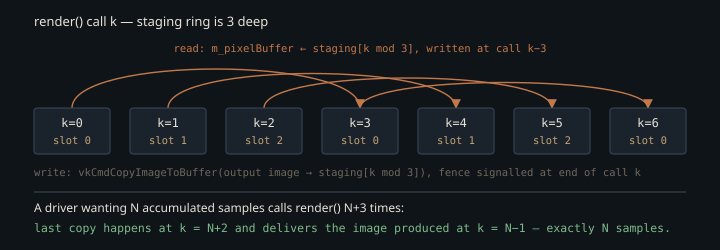

Monograph · Tree · ← Module hub · Request path
architecture
Request path
CLI/example → Scene → VulkanRenderer::initialize → setScene → render → pixels.
One sequence, in an order that matters
OHAO has no editor host. The rendering examples — `cornell_box`, `model_viewer`, `env_demo`, `turntable`, the interactive viewer — are thin `main()`s over one sequence: construct a `VulkanRenderer` at a fixed output size, bring up the device, build a `Scene` out of plain CPU components, hand the scene over, choose a `RenderMode`, then loop `render()` and read the pixels back. `cornell_box` is the shortest complete instance of it, and it shows the one convention that surprises people reading the CLI: the output resolution is a compile-time constant in the driver, never an argument — 1920×1080 in `cornell_box`, `model_viewer` and `env_demo`, 1280×720 in `turntable` and the interactive viewer.
const uint32_t W = 1920, H = 1080;examples/cornell_box.cpp:73Scene construction touches no Vulkan at all — walls, spheres, and twelve sphere lights are built as `MeshComponent` / `MaterialComponent` / `LightComponent` on actors, with the renderer already alive but not yet aware of them. `setScene()` is where CPU scene data crosses into GPU memory in every shipped driver, and the crossing is conditional:
if (m_initialized && m_scene) {ohao/gpu/vulkan/renderer.cpp:365Invert the first two calls — build the scene and `setScene()` it before `initialize()` — and nothing complains. The pointer is stored, the upload is skipped, and `initialize()` never retries it, so `m_vertexBuffer` stays null. `renderDeferred` hands geometry to the deferred passes only when that handle is live, and the GBuffer pass has nothing to bind without it:
if (m_vertexBuffer != VK_NULL_HANDLE && m_indexBuffer != VK_NULL_HANDLE) {ohao/gpu/vulkan/render_dispatch.cpp:52The rest of the pass chain runs anyway, and the Preetham sky pass is on by default, so what lands is an empty sky-lit frame — not black, and not an error either.
bool m_skyEnabled{true};ohao/render/deferred/deferred_renderer.hpp:176The RT modes survive the same mistake by accident, for a reason that deserves its own movement.
Why the scene is uploaded twice
`setRenderMode()` is where ray tracing actually comes into existence. The renderer deliberately does *not* create a path tracer during `initialize()`:
// Lazy-create realtime/offline PathTracers on setRenderMode(). Eager dualohao/gpu/vulkan/renderer.cpp:206So at `setScene()` time — which in every shipped example precedes `setRenderMode()` — there is no `PathTracer` to bind anything to. The upload runs in full anyway: `buildAccelerationStructures()` copies vertex and index data into device-local RT buffers, extracts per-vertex normals and UVs, uploads per-triangle material IDs and the three-vec4-per-material colour table, builds the bindless texture array, uploads the light SSBO plus environment map, and builds BLAS and TLAS.
createRTVertexIndexBuffers();ohao/gpu/vulkan/scene_upload.cpp:377Every step that has something to hand the path tracer — material data, material buffers, bindless textures, the normal/UV/light buffers — does so through `forEachRTRenderer`, which walks two `unique_ptr` slots, and at that moment both are null, so all of it lands nowhere. The iterator is *almost* the only door. The only direct profile references across the three upload files sit in the environment-map path, which asks the offline tracer — never the realtime one — for its current bindless view and sampler lists so the env texture can take the next free slot:
auto views = m_rtOfflineRenderer ? m_rtOfflineRenderer->getBindlessImageViews()ohao/gpu/vulkan/light_upload.cpp:479`setBindlessTextures` assigns rather than appends, so in a realtime-only run that ternary reads an empty list, the env map lands at index 0, and the one-entry array goes back through `forEachRTRenderer` over the material textures `uploadRTTextureArray` installed moments earlier in the same call.
The repair for the null-profile upload is explicit: after lazily constructing the profile, `ensureRTRenderer` marks the acceleration structures dirty and re-runs the entire upload — it is the second of `updateSceneBuffers()`'s callers, not a private back door.
if (created && m_scene && m_initialized) {ohao/gpu/vulkan/renderer.cpp:438A default `cornell_box` run therefore builds its BLAS and TLAS twice and uploads its textures twice. Only the second pass is the one the tracer reads. Note the guard: the re-upload is conditional on a scene already existing, so a driver that selected its RT mode *before* `setScene()` would pay the cost once — the duplicate exists purely to rescue the scene-first order every example uses.
The rejected alternative is eager construction: build both the realtime and the offline `PathTracer` in `initialize()` so `setScene()` binds them on the first pass. It lost on memory. Each profile owns a beauty image plus the full AOV set at output resolution — motion vectors, depth, roughness, split diffuse/specular radiance, albedo, normal-roughness — and the source states the hazard as a possibility, not a measurement: eager dual init *can* OOM at 4K. No shipped driver renders at 4K, so at the resolutions the examples actually hardcode the avoided cost is a projection, not observed history. OHAO still pays one redundant scene upload at startup rather than hold a second full-resolution path tracer that most runs never dispatch.
Mode selection can also fail closed. If RT is unavailable, `setRenderMode` prints and returns *without* assigning `m_renderMode`, leaving the renderer in whatever mode it already had — which at startup is `Forward`.
std::cerr << "Path tracing not available, staying in current mode" << std::endl;ohao/gpu/vulkan/renderer.cpp:453No example ever asks for `Forward`: `resolveMode()` returns Deferred or one of the two RT modes. Forward is reachable only as the refusal state, and the examples print the mode they *requested*, not the one the renderer accepted, so a silent downgrade reads as success on stdout.
Three deep, and the +3 in every driver
The offline drivers all render more frames than the user asked for, by exactly three:
const int frames = cli.useDeferred ? 10 : (samples + 3);examples/cornell_box.cpp:164That constant is not a fudge factor. Frame resources are a ring of three, and the RT dispatch path reads pixels out of the same slot it is about to overwrite — after waiting on that slot's fence, which is the fence signalled three calls ago.
constexpr uint32_t MAX_FRAMES_IN_FLIGHT = 3;ohao/render/frame/frame_resources.hpp:19// Read back previous frame's pixelsohao/gpu/vulkan/render_dispatch.cpp:138So the CPU-visible pixel buffer always lags the GPU by the ring depth. With `samplesPerFrame` at its default of 1, one `render()` call adds one sample to the accumulator, and the last copy of a loop of `samples + 3` calls happens at `k = samples + 2`, delivering the image produced at `k = samples - 1` — the frame after which exactly `samples` samples have been integrated. The overshoot drains the pipeline and lands on the requested budget with nothing wasted.

Deferred takes the other branch of that ternary and renders a fixed count that ignores the sample argument entirely — in raster mode the spp number on the command line does nothing. The constant is per-driver, not engine-wide: ten in `cornell_box`, thirty in `model_viewer`.
const int frames = cli.useDeferred ? 30 : (samples + 3);examples/model_viewer.cpp:334Three different exits from the GPU
`getPixels()` has three exits behind one signature, and which one runs depends on the denoiser. `None`, `Atrous` and `DLSSRR` share the first: return the ring buffer described above. `None` does nothing to it; `Atrous` denoises the beauty image (`m_outputImage`) in place on the GPU, and the DLSSRR path, when it runs at all, tonemaps into that same image — so neither needs a readback of its own.
if (m_denoiseMode == DenoiseMode::None || m_denoiseMode == DenoiseMode::Atrous ||ohao/gpu/vulkan/renderer.cpp:706NRD takes the second, and it touches neither the ring nor the accumulator: it copies the tracer's RGBA8 tonemapped image — descriptor binding 30, already denoised and tonemapped on the GPU — straight into host memory behind a `vkQueueWaitIdle` on the graphics queue.
VkImage srcImage = getNrdTonemappedAOVImage();ohao/gpu/vulkan/renderer.cpp:1661OIDN takes the third: a full `vkDeviceWaitIdle`, then three float readbacks — the accumulation image plus the albedo and normal AOVs — into host memory, where the CPU denoiser runs over them.
bool ok = readbackImage(rtRenderer->getAccumImage(), beauty);ohao/gpu/vulkan/render_dispatch.cpp:622That third path matters because the offline profile denoises by default:
.denoiseMode = DenoiseMode::OIDN,ohao/render/rt/rt_settings.hpp:60so a plain `cornell_box out.png 1024` writes a PNG denoised from an accumulator holding 1027 samples, not 1024 — the three drain frames are still real samples, and a readback that reads the accumulator directly sees them. The `+3` padding is what makes `--denoise=none` land on the exact budget; under the default it is three free samples on top of it. The result of either non-ring path is cached in a `mutable` buffer and invalidated at the end of every `render()`, so calling `getPixels()` twice per frame costs one denoise, not two. The call is declared `const` and is not: both non-ring branches `const_cast` away constness to allocate a command buffer, submit it, and block. The comment in the source is honest that this is only safe after `render()` returns on a single thread.
The settings reset that eats your overrides
Once the loop starts, the renderer re-derives its RT settings from the pipeline object on every single frame:
m_rtSettings = pipeline.getDefaultSettings();ohao/gpu/vulkan/renderer.cpp:525An override a driver configured once does not survive even to its first dispatch. `renderRTPipeline` calls `prepareRTSceneForFrame` — the function that performs that reset — before it records the command buffer that dispatches the tracer:
prepareRTSceneForFrame(pipeline, false);ohao/gpu/vulkan/render_dispatch.cpp:149Four values are explicitly re-injected around the reset — anisotropy strength and rotation, subsurface strength, and the interactive per-frame sample count:
// so restore the user's choice here (same pattern as aniso/SSS preservation).ohao/gpu/vulkan/renderer.cpp:496The denoiser gets a different mechanism: `setDenoiseMode()` raises a sticky `m_denoiseModeOverridden` flag that blocks the per-frame resync, and the override is pushed down into the tracer's own settings for exactly two modes, `Atrous` and `DLSSRR`.
m_rtSettings.denoiseMode = m_denoiseMode;ohao/gpu/vulkan/renderer.cpp:492`Atrous` needs it because the RT pipeline dispatches that denoiser itself, in place on the beauty image. `DLSSRR` rides the same branch, but the tree disagrees with itself about what it does: `path_tracer_render.cpp` holds a real NGX evaluate-and-tonemap block, compiled out unless the vendored NGX static library is present, while `getPixels` still carries a Phase-1 comment saying DLSSRR does not dispatch denoising at all.
// Phase 1: DLSSRR does not yet dispatch denoising (foundation only) — theohao/gpu/vulkan/renderer.cpp:704OIDN is the one genuinely consumer-side mode — it runs on the CPU after readback. NRD is dispatched inside the RT pipeline like `Atrous`, but off a different gate: the tracer runs it whenever the denoiser initialized and the profile enables auxiliary AOVs, and never reads `denoiseMode` to decide, so pushing the override down would buy it nothing.
if (m_nrdDenoiser && m_renderSettings.enableAuxiliaryAOVs) {ohao/render/rt/path_tracer_render.cpp:869Full scene uploads funnel through one routine — `updateSceneBuffers()` — reached from `setScene()`, from `ensureRTRenderer()`, and directly by callers that mutate a live scene, and there is one authority over RT behaviour (the active `IRTRenderPipeline`, reasserted every frame). Ordering mistakes around the upload fail *silently* — a skipped upload, a refused mode, a stale override — never with an error. When an OHAO driver renders an empty frame or ignores a flag, suspect call order before suspecting the shaders.
Contracts
- `initialize()` must precede `setScene()`. Reversed, the upload is skipped with no error; it is repaired only by a later `setRenderMode()` into an RT mode (via `ensureRTRenderer`) or by calling the public `updateSceneBuffers()` yourself.
- `setRenderMode()` may refuse. Read back `getRenderMode()` rather than trusting the value you passed; the examples do not, and print the requested mode.
- In the modes that return the ring buffer (None, Atrous, DLSSRR) the pixels trail the GPU by `MAX_FRAMES_IN_FLIGHT` calls. Reading them after fewer than four `render()` calls returns a staging slot that was never written.
- Any new per-run RT setting must be re-injected in `applyRTRenderSettings`, or the `getDefaultSettings()` reset inside `prepareRTSceneForFrame` silently reverts it before the next dispatch.
- The scene must be destroyed before the renderer. In `cornell_box` reverse declaration order already guarantees this — the `VulkanRenderer` is declared above the `unique_ptr<Scene>` — so the explicit `scene.reset()` before `return` is belt-and-braces, not the mechanism.
Source files
examples/cornell_box.cppohao/gpu/vulkan/renderer.cppohao/gpu/vulkan/render_dispatch.cppohao/render/deferred/deferred_renderer.hppohao/gpu/vulkan/scene_upload.cppohao/gpu/vulkan/light_upload.cppohao/render/frame/frame_resources.hppexamples/model_viewer.cppohao/render/rt/rt_settings.hppohao/render/rt/path_tracer_render.cppexamples/interactive.cppParent hub for the full pipeline narrative; this page is the file-level design unit. Sitemap · hover glossary terms anywhere.